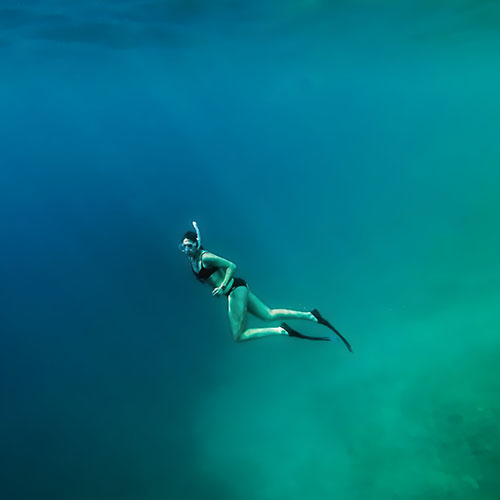
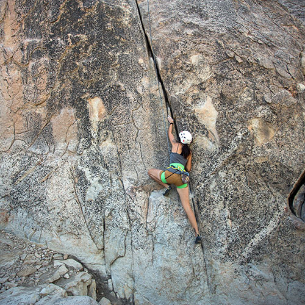
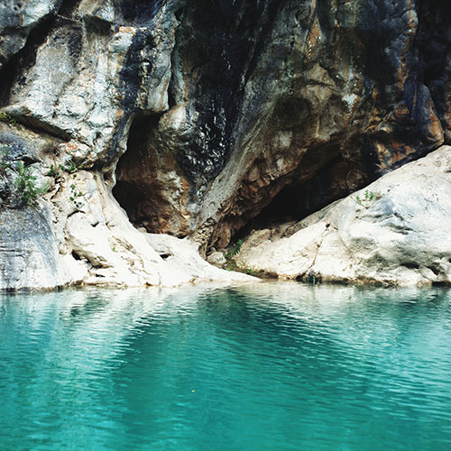

ATLANTIS ITINERARY

Day One
Enjoy swimming around the ancient site of Atlantis!
Day Two
Explore the technology that made the underwater city possible!

Day Three
Climb to the highest peak of the island!

Day Four
Check out the many caves hidden deep within the rocky cliffs!
Day Five
Don't forget to walk the streets of the city, shop, and visit the museums!